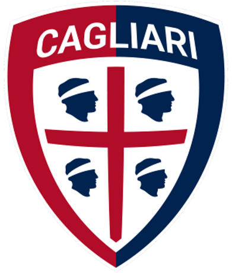
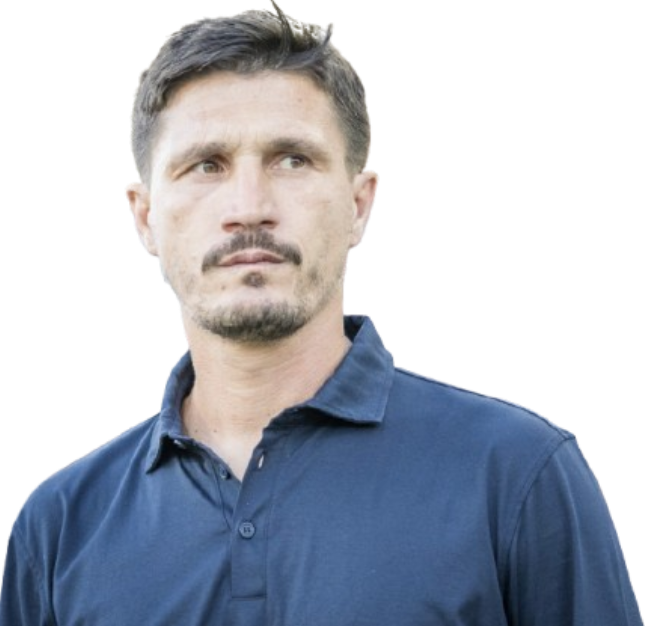
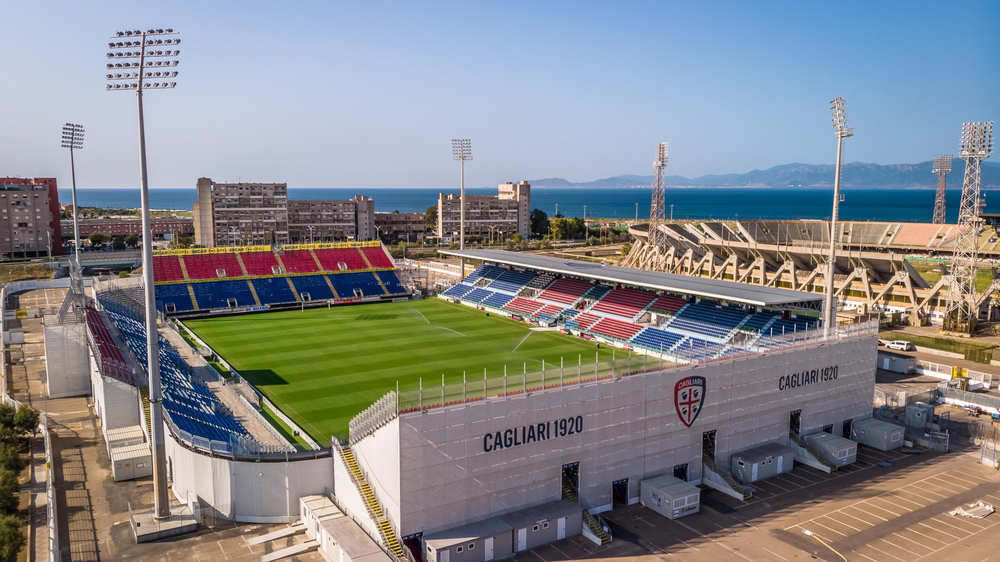

Treinador: Fabio Pisacane
Fabio Pisacane é um treinador resiliente e antigo ídolo do Cagliari. Após o sucesso na formação do clube, onde venceu a Taça de Itália Primavera, assumiu a equipa principal para liderar um projeto de renovação focado na identidade e no lançamento de jovens talentos na Serie A.

Estádio: Unipol Domus
O estádio Unipol Domus é a casa temporária do Cagliari desde 2017, construída enquanto o clube aguarda a renovação do Stadio Sant'Elia. O recinto destaca-se pela sua estrutura moderna e pela proximidade entre as bancadas e o relvado, criando uma atmosfera intensa que simboliza a paixão e o pragmatismo do povo sardo.

Estilo de Jogo:
O estilo de jogo de Fabio Pisacane no Cagliari, é profundamente influenciado pela sua ligação emocional ao clube e pela sua experiência na formação, focando-se num futebol pragmático, intenso e de forte identidade regional.
"Una Terra, Un Popolo, Uma Squadra!"